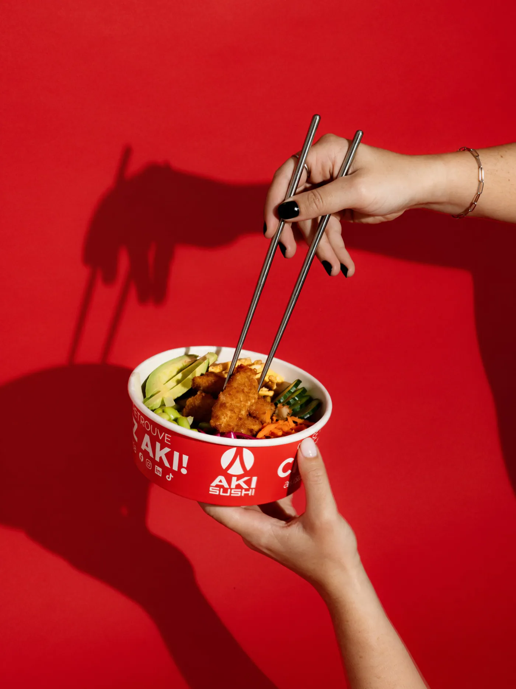
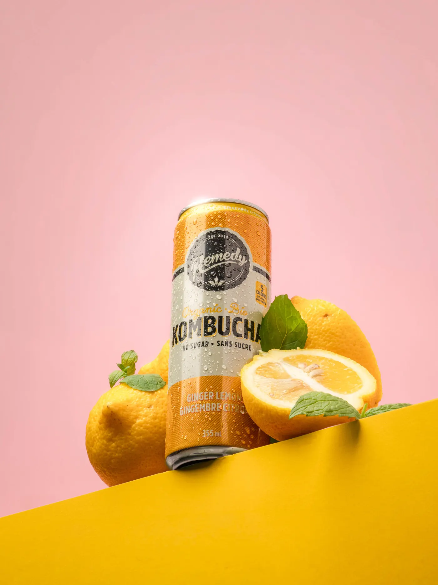
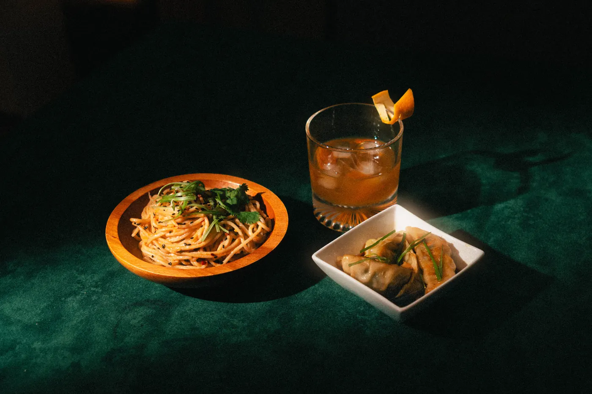
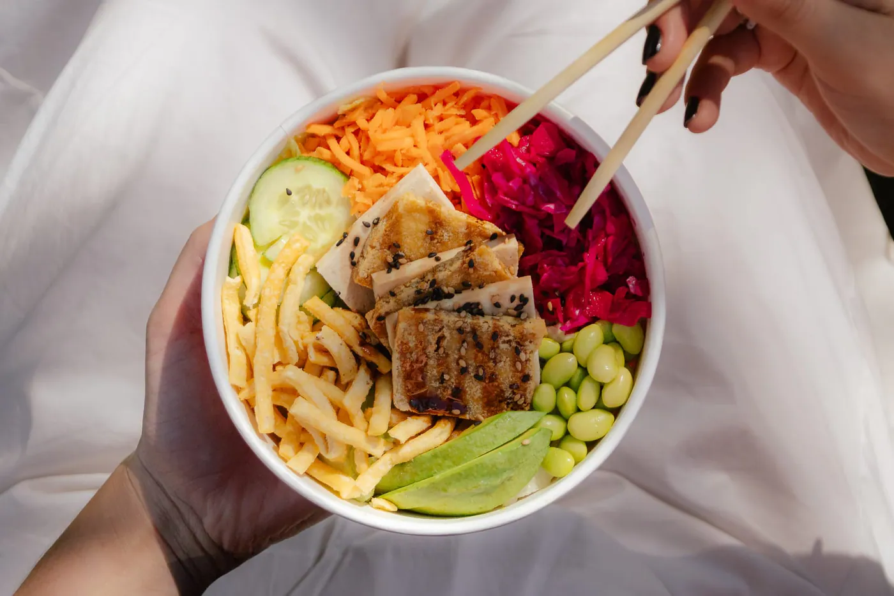
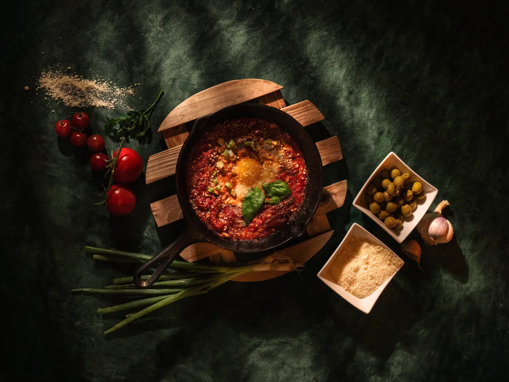
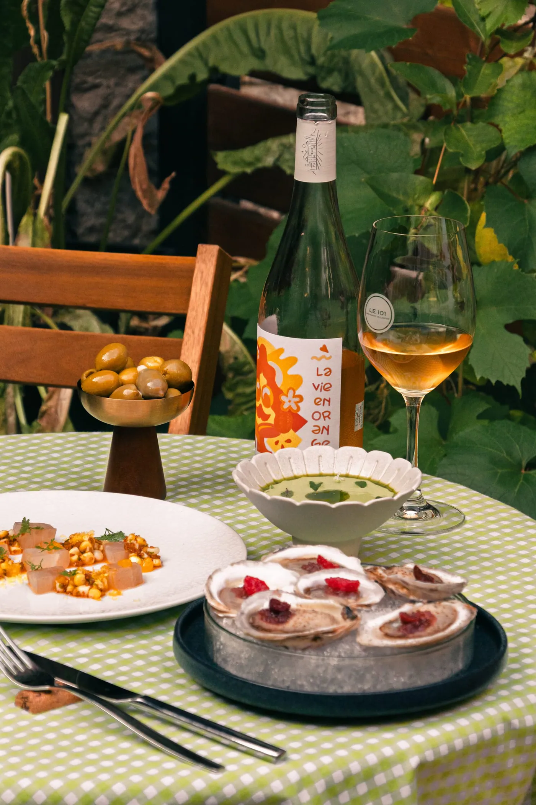
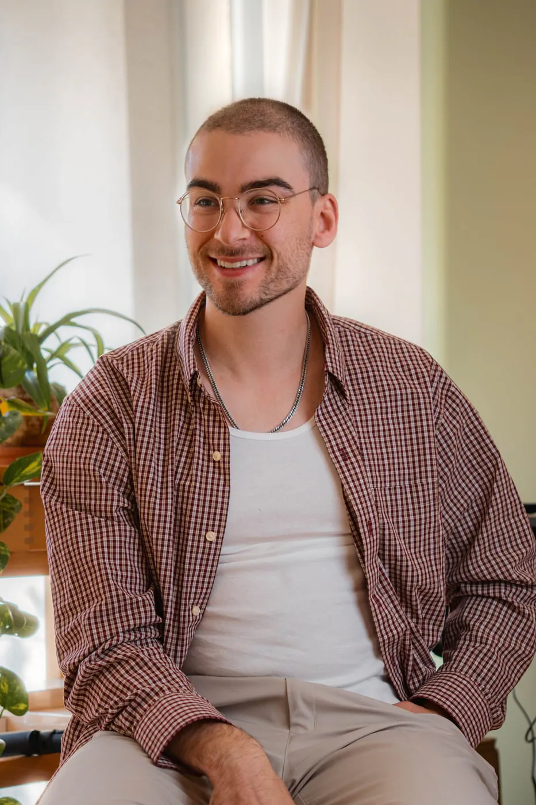

Projets sélectionnés
Photographie culinaire et de produits : mandats et projets personnels.

Aki Sushi Studio
Photographie culinaire, studio

Remedy Kombucha
Photographie de produits

La Table de Jade
Photographie culinaire

Aki Sushi
Photographie culinaire, produit

Rosso Domenica
Photographie culinaire

Le 101 Restaurant
Photographie culinaire
Abonnements · 6 places
Du contenu chaque mois, à prix clair.
Base
600 $par mois
Pour un café ou un petit resto qui veut des photos fraîches chaque mois.
- 1 tournage de 2 h par mois
- 20 photos retouchées
Assez pour environ 5 photos par semaine à publier.
Standard Recommandé
950 $par mois
Pour un resto qui publie souvent et change son menu selon les saisons.
- 1 tournage de 3 h par mois
- 30 photos retouchées
- 2 vidéos courtes montées par mois
- 4 tournages saisonniers de menu par année
- Un calendrier de publication
Assez pour environ 7 photos par semaine à publier.
Plus
1 400 $par mois
Pour un resto qui veut montrer son équipe et son ambiance, en plus des plats.
- 2 tournages par mois
- 50 photos retouchées
- 4 vidéos courtes montées par mois
- Photos d'équipe et d'ambiance
Assez pour environ 12 photos par semaine à publier.
Engagement de 3 mois. Photos livrées en 5 jours ouvrables, en usage illimité : web, réseaux, imprimé, publicité. Vidéos courtes de 15 à 30 secondes en format vertical, tournées le même jour que les photos, avec une musique libre de droits et 1 ronde de corrections. Garantie : si le premier mois ne vous plaît pas, je refais le tournage ou je vous rembourse. Je travaille seul, donc 6 places en abonnement. Taxes en sus. Déplacement inclus dans un rayon de 25 km à Québec et à Lévis.
Disponible pour de nouveaux projets
Un projet en tête ?
Parlons-en.
Parlez-moi de votre resto ou de votre café : on se parle 20 minutes en visio pour trouver le forfait qui vous convient.
Réponse en moins de 24 h ouvrables Québec, Lévis et les environs
- 01
On se parle 20 minutes
En visio : votre resto, vos objectifs et le forfait qui vous convient.
- 02
Je viens entre deux services
Chaque mois, je tourne photos et vidéos au moment qui dérange le moins votre équipe.
- 03
Photos livrées en 5 jours
Retouchées, livrées en 5 jours ouvrables, prêtes à publier.

Photographie culinaire,
une touche humaine et moderne.
Je suis Guillaume Routhier, photographe culinaire basé dans la région de Québec. Mon travail cherche un équilibre entre le humain et le moderne : des images qui restent proches des gens, tout en soignant chaque détail. Je me déplace à Québec, à Lévis et dans les environs.
De la mise en place à la retouche, j'aime donner une direction claire à chaque projet. Je collabore aussi avec des agences, en sous-traitance ou en marque blanche, en suivant leur direction artistique.
Guillaume Routhier · Région de QuébecFAQ
Questions fréquentes
Combien coûtent vos forfaits pour restaurants ?
Trois abonnements, taxes en sus : Base à 600 $ par mois (1 tournage de 2 h, 20 photos), Standard à 950 $ par mois (1 tournage de 3 h, 30 photos, 2 vidéos courtes, 4 tournages saisonniers de menu par année et un calendrier de publication) et Plus à 1 400 $ par mois (2 tournages, 50 photos, 4 vidéos courtes, photos d'équipe et d'ambiance). Photos livrées en 5 jours ouvrables.
Comment fonctionnent les vidéos courtes ?
Ils sont inclus dans les forfaits Standard (2 par mois) et Plus (4 par mois). Ce sont des vidéos de 15 à 30 secondes en format vertical, pour Instagram (Reels), TikTok et Facebook, tournées le même jour que les photos. Elles sont livrées montées, avec une musique libre de droits que vous pouvez remplacer par un son tendance, et une ronde de corrections est incluse.
Y a-t-il un engagement ?
Oui, 3 mois. Si le premier mois ne vous plaît pas, je refais le tournage ou je vous rembourse.
Pourquoi seulement 6 places ?
Je travaille seul : je fais moi-même chaque tournage et chaque retouche. Six abonnements, c'est ce que je peux bien servir chaque mois.
Où vous déplacez-vous ?
À Québec, à Lévis et dans les environs. Le déplacement est inclus dans un rayon de 25 km.
Puis-je utiliser les photos partout ?
Oui. Les photos sont livrées en usage illimité : web, réseaux sociaux, imprimé et publicité. Je conserve le droit d'auteur et le droit de les montrer dans mon portfolio.
Comment commencer ?
Par le formulaire de contact, par courriel à info@guillaumerouthier.ca ou par texto au 438 499-9314. Je réponds en moins de 24 h ouvrables pour fixer un appel de 20 minutes en visio.
Travaillez-vous avec des agences ?
Oui, en sous-traitance ou en marque blanche, en suivant leur direction artistique.